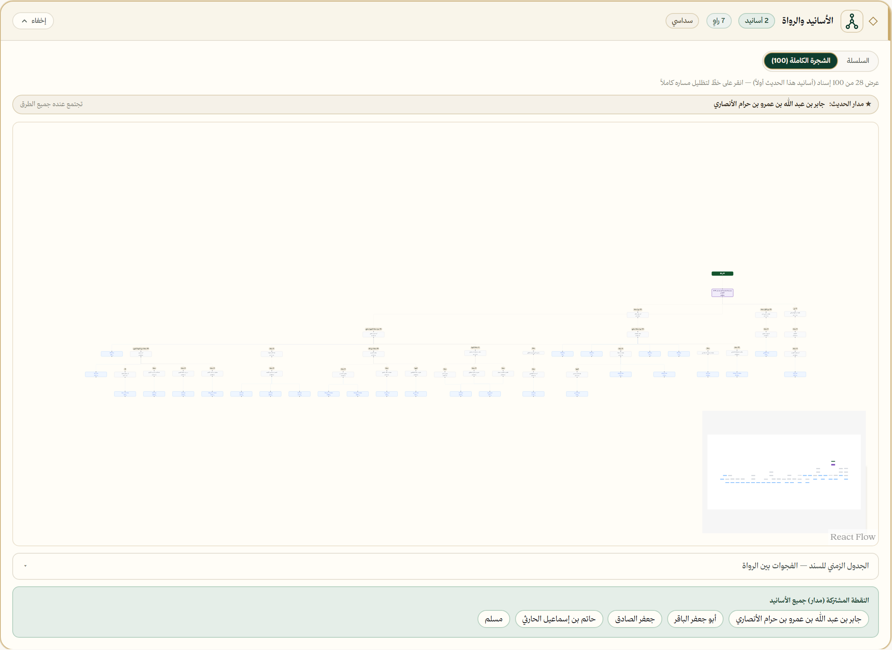
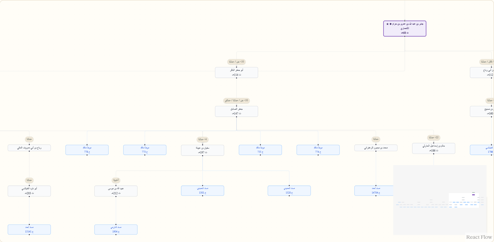

في موسوعة الجامع
أيُّ حديثٍ له أكثرُ الأسانيد؟
0
إسنادًا لحديثٍ واحد
حديثٌ واحد…
674رواية
28كتابًا
679إسنادًا
573راويًا
من «الموطأ» (179هـ) إلى «المطالب العالية» (852هـ) · سبعة قرون
hadith.dev/hadith/15048 · التخريج
hadith.dev/hadith/15048 · شجرة الإسناد


افتح أي حديث… وانظر كيف وصل إلينا
hadith.dev
التخريج · شجرة الإسناد · الرواة